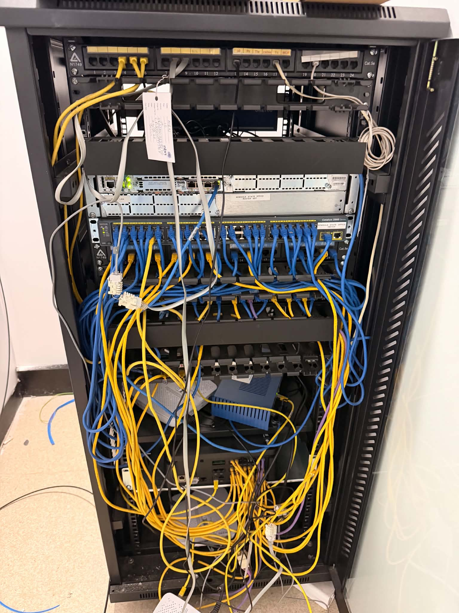
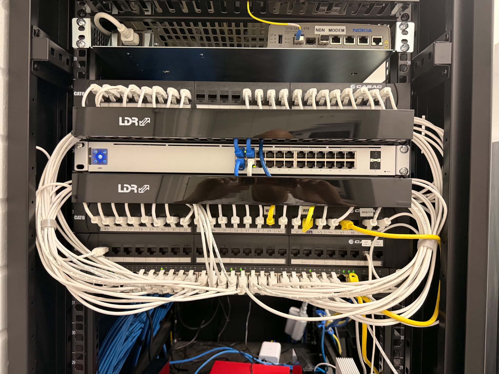

Perth IT Support for Small & Medium Business
Practical IT Support for Perth Businesses
When technology slows your team down, the real cost is lost time, interrupted work and frustrated staff. AY Technology helps Perth businesses resolve day-to-day IT problems and improve the systems they rely on.

Microsoft 365
Email, accounts and access
Networks & Wi-Fi
Connectivity and reliability
Cybersecurity
Practical risk reduction
Backup & Cloud
Protection and recovery
Business Impact First
IT Problems Are Business Problems
A slow computer, unreliable Wi-Fi or locked Microsoft 365 account can stop work completely for the person affected. Repeated issues across a team can become hours of lost productivity every week.
Our approach is straightforward: understand what is affecting the business, fix what needs attention and recommend sensible next steps without turning every job into an unnecessary technology project.
Common reasons Perth businesses contact us
- Staff cannot access email, files or Microsoft 365.
- Computers are slow, unreliable or repeatedly interrupting work.
- Office Wi-Fi or network connections keep dropping.
- Backups, account security or recovery arrangements are unclear.
- The business needs regular IT help but not a large internal IT team.
Perth Business IT Services
Support for the Technology Your Team Uses Every Day
Start with the issue you have now, or talk to us about improving the wider setup.
Remote IT Support
Troubleshooting for software, login, account and everyday computer problems that can be handled securely without an on-site visit.
Microsoft 365 Support
Help with Microsoft 365 email, user accounts, access, common configuration issues and business collaboration tools.
Networks & Wi-Fi
Business network setup, troubleshooting and improvements for unstable connections, Wi-Fi coverage and connected devices.
Network monitoring →Cybersecurity
Practical support for stronger accounts, devices, email security and safer day-to-day technology practices.
Cybersecurity services →Cloud Backup & Recovery
Help protect business files and systems with appropriate backup, recovery and continuity planning.
Backup & recovery →Business Technology Projects
One-off technology work including workstation, network, cloud and related business IT improvements.
Choose What Fits
One-Off IT Help or Ongoing Support
You do not need to commit to an ongoing agreement just to ask for help.
| What you need | One-off support | Ongoing IT support |
|---|---|---|
| Best for | A specific issue, upgrade or project | Businesses that need regular help and oversight |
| Typical examples | Wi-Fi problem, Microsoft 365 issue, new workstation, network cleanup | Recurring user support, device and network needs, ongoing technology management |
| Commitment | Request assistance when you need it | Discuss a support arrangement matched to business requirements |
| Good next step | Describe the job | Discuss your support needs |
Real AY Technology Project
A Cleaner, Easier-to-Manage Network Cabinet
This network cabinet re-organisation focused on improving cable organisation and identification so the setup is easier to understand, maintain and troubleshoot.
It is a simple example of what practical IT work should achieve: less confusion, easier maintenance and a more manageable environment for future changes.
Have a similar IT project?

Who We Support
Built Around Perth Small and Medium Businesses
Especially useful for organisations that rely heavily on technology but do not maintain a large internal IT team.
Trades & Construction
Devices, Microsoft 365, shared files, remote access and office/site connectivity.
Professional Services
Reliable email, documents, account security and day-to-day user support.
Retail & Hospitality
Business computers, cloud applications, connectivity and user accounts.
Small Offices
Practical support for teams that need dependable technology without full-time internal IT.
Perth Service Area
Local Support Across the Perth Metropolitan Area
AY Technology supports businesses across Perth and surrounding metropolitan areas. Many software, account, email and cloud issues can be handled remotely, while suitable workstation, network and infrastructure work may be arranged on site.
Need help outside the office?
Remote assistance is also available for suitable issues elsewhere in Australia. Tell us where your team is located and what is happening, and we can review the appropriate support option.
FAQ
IT Support Perth Questions
Do you provide IT support for small businesses in Perth?
Yes. AY Technology provides practical IT support for small and medium-sized businesses across Perth, including one-off assistance and ongoing support options.
Can you provide both remote and on-site IT support in Perth?
Remote support is available for suitable software, account, Microsoft 365 and cloud issues. Suitable on-site assistance may be arranged for network, workstation and infrastructure work across Perth depending on availability and requirements.
Can you help with Microsoft 365?
Yes. We can assist with common Microsoft 365 email, account, access, setup and configuration issues.
Do I need an ongoing IT support contract?
No. You can request help with a one-off issue or project, or discuss ongoing support when regular IT assistance is a better fit.
How quickly do you respond to new enquiries?
AY Technology aims to review new enquiries within 24 hours. Urgent requests should be made by calling 0423 384 874.
Talk to AY Technology
Need Help With Your Business IT?
Tell us what is slowing your team down, what you need improved or what project you are planning. We will review the request and recommend the most suitable next step.
0423 384 874New enquiries are generally reviewed within 24 hours.